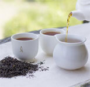
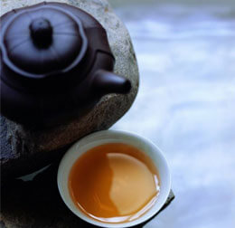
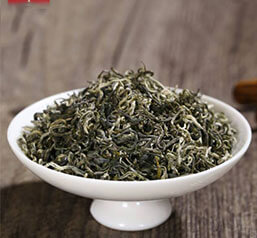

- 1
- 2
- 3
- 4
今日精选
- 茶具套装特价整套陶瓷防烫双层杯功夫茶具中...
- 中茶探索跨界合作 引领茶行业迎接新机遇
- 走进田野公益茶会——重阳花境·茶中岁月
- 野茶难分辨 收藏需谨慎
- 从陆羽到古苇清，中国茶的振兴不能只是靠祖宗
- 2017湖南健康养生博览会暨茶叶、紫砂展
- 喝普洱茶致癌几率微乎其微 陈君石：应加强监...
- 2017夏季新款汉服女古装改良唐装上衣民族风...
---| 茶 | 之 | 人 | 生 |---
THE LIFE OF TEA

---| 茶 | 之 | 文 | 化 |---
THE LIFE OF TEA

茶，是一种心情，喝茶是一种心境
品茶要心静，这是品茶人极为重要的心态。茶的性格如水，清幽、儒雅、隽永，如高山之雾，七月巧云，清...
点击阅读>>
心清可茶，茶可清心；若要清心，惟有香茗
心清可茶，茶可清心；若要清心，惟有香茗。在这喧嚣的尘世间，人们最难做到的恐怕就是这“清心”二字。
点击阅读>>
茶道讲究以茶立德，以茶陶情
点击阅读>>茶文化相关

- 慢慢品茶语 苦涩酸甜甘香，每一味道在...
- 茶是一门学问 学会喝茶，学会静下心来...
- 品茶风雅 一茶一酒一人生
- 喝茶与悟禅“清茶皓月照禅心”的佳境

茶本是大自然的灵物，带着自然的...
点击阅读>>
茶文化包含着丰富的儒家美学思想
点击阅读>>
人生如茶，多点淡然，少点虚荣
点击阅读>>
茶中有禅，茶禅一心，更能清静人...
点击阅读>>---| 茶 | 之 | 经 | 典 |---
THE LIFE OF TEA

茶
祁门红茶简称祁红，为工夫红茶中的珍品，国际上享有盛誉的红茶品种。产于安徽省祁门、东至...

茶
西湖龙井是最著名的绿茶品种，同时也是我国的第一名茶。西湖龙井茶，因产于杭州西湖山区...

茶
黄山毛峰是著名绿茶品种，产于安徽黄山。这里山高林密，日照短，云雾多，自然条件十分优...

茶
普洱茶主要产于云南省的西双版纳、临沧、普洱等地区。普洱茶讲究冲泡技巧和品饮艺术...
茶
武夷岩茶是中国传统名茶，是具有岩韵（岩骨花香）品质特征的乌龙茶。产于福建闽...

茶
都匀毛尖， 中国十大名茶之一。1956年，由毛泽东亲笔命名，又名“白毛尖”、“细...

茶
铁观音茶，中国传统名茶，属于青茶类，是中国十大名茶之一。原产于福建泉州市安...

茶
君山银针是中国名茶之一。产于湖南岳阳洞庭湖中的君山，形细如针，故名君山银针...